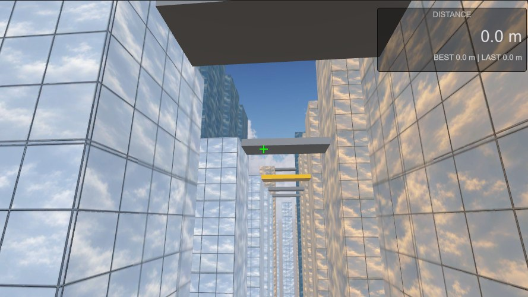

VR Web Swing
건물에 거미줄을 걸어 스윙하며 도시를 가로지르는 VR 게임

- Period
- 2026.10 ~ 진행 중
- Team
- 4인 (콘텐츠 1, PM 1, 기반 시스템 1, 실기기 개발 · 테스트 1)
- Role
- 콘텐츠 개발 — 맵 기믹 · 난이도
- Stack
- Unity 3D
- C#
- XR Interaction Toolkit
- OpenXR
- Claude Code
Scope · 작업 범위
내가 한 것
- 콘텐츠 기획안 작성 (기믹 5종 · 추격 벽)
- 맵 기믹 프리팹 · 스크립트 제작
- 기믹 배치 규칙 · 난이도 기준 설계와 조정
- AI 작업 규칙과 검토 방식 설계
팀이 한 것
- 팀원 A — PM, 멀미 자료 조사, 에셋
- 팀원 B — 스윙 기반 시스템, 멀미 대책 구현
- 팀원 C — VR 실기기 개발 · 테스트
- Claude Code — 기믹 배치 · 규칙 연결, 추격 벽, 위험 비네트 구현 (내 지시 · 검증)
01 · CONTENT
콘텐츠 기획안 — 직접 작성
- 중간발표 전 주에 콘텐츠 기획안을 직접 써서 팀에 공유했습니다. 기믹 5종을 설계하고, 기믹을 문제 은행처럼 무작위로 꺼내 쓰는 무한 맵 구조와 뒤에서 쫓아오는 벽에 닿으면 게임 오버가 되는 조건을 추가했습니다.
- 이후 이 기획안을 기준으로 기믹 배치와 게임 규칙 연결을 Claude Code에 맡겨 하루 만에 게임에 넣었습니다.
기믹 배치 규칙
- 무한 맵의 도시 구간 사이사이에 기믹을 넣습니다. 처음에는 등록한 순서대로 한 번씩 보여 주고, 그다음부터 같은 간격 규칙을 지키며 무작위로 나오게 했습니다.
- 기믹마다 연속 출현 횟수를 정할 수 있게 해, 사라지는 발판과 레이저는 여러 번 이어서 나오도록 난이도를 맞췄습니다.
- 순서대로 보여 주는 구간이 끝나면 뒤에서 벽이 쫓아오기 시작하고, 벽에 닿으면 게임 오버입니다. 벽이 나타나는 순간에는 약 2초 동안 화면 가장자리가 반투명한 붉은색으로 물들어 경고합니다.
02 · AI WORKFLOW
역할 나누기 — 기준과 검증은 내가, 구현은 AI가
- 기믹 프리팹과 기본 스크립트는 직접 만들고, 맵 배치 · 게임 규칙 연결 · 비네트 셰이더 구현은 Claude Code에 맡겼습니다.
- 수치 조정은 직접 플레이하면서 바로 고칠 수 있도록, 레이저 개수 · 벽 속도 같은 값을 모두 인스펙터로 빼도록 지시했습니다.
flowchart LR
A["나: 무엇을 · 어떤 기준으로"] --> B["AI: 계획"]
B --> C{"나: 정석인가?"}
C -- 아니면 다시 --> B
C -- 맞으면 --> D["AI: 구현 · 컴파일 확인"]
D --> E["나: diff 검토 · 직접 플레이"]
E -- 수치 조정 --> A팀 프로젝트에 맞춘 AI 작업 규칙
- 다른 팀원이 만든 프로젝트라, 먼저 AI에게 팀의 코드 · README · 커밋 기록을 읽혀 작업 규칙 파일(
CLAUDE.md)을 만들게 하고 검토했습니다. - 패키지와 XR 설정은 요청 없이 바꾸지 않기, 팀원의 씬은 꼭 필요한 만큼만 고치고 실험은 개인 씬에서 하기, 실행해 보지 못한 코드는 "미검증"으로 보고하기, 데스크톱 테스트를 실기기 검증이라고 말하지 않기 같은 규칙을 넣었습니다. AI는 Unity 에디터를 직접 조작하지 못하므로, 작업이 끝나면 인스펙터 참조 연결처럼 사람이 에디터에서 해야 할 작업을 "에디터 작업 목록"으로 따로 보고하게 했습니다.
- 이 파일은 내 컴퓨터에서만 쓰도록 git에서 제외해, 팀원에게 내 작업 방식을 강요하지 않았습니다. AI가 바꾼 코드는 diff가 자동으로 뜨게 설정해 매번 확인했습니다.
AI의 계획 검증하기
- 추격 벽용 위험 비네트를 만들 때, "카메라 앞에 사각형을 두는 것이 VR의 정석이면 진행하고, 아니면 원래 방식을 설명한 뒤 계획을 다시 짜라"고 지시했습니다.
- AI가 확인한 결과 평면 사각형은 VR의 넓은 시야각과 양안 차이 때문에 맞지 않았고, XR Interaction Toolkit의 터널링 비네트처럼 눈을 감싸는 반구 메시를 쓰는 것이 표준이었습니다. 계획을 그 방식으로 바꿔 구현했습니다.
03 · TROUBLESHOOTING
AI가 공용 씬을 수정해 머지 충돌 — 규칙을 "판단"에서 "멈춤"으로
- ISSUE
- 작업 규칙에 "팀원의 씬은 꼭 필요한 만큼만 고치고, 실험은 개인 씬에서"를 넣었지만, 기믹 등록 목록과 위험 비네트 오브젝트가 팀 공용 메인 씬에 추가됐습니다. 같은 날 다른 팀원도 이 씬에 안개 · 비네트 효과를 넣어, 브랜치를 합치면 씬 파일이 충돌하는 상황이 됐습니다.
- DECISION
- 원인은 "꼭 필요한 만큼"의 판단을 AI에게 맡긴 것이었습니다. 무한 맵 스크립트가 메인 씬에 있으니, AI에게는 메인 씬 수정이 "꼭 필요한" 변경이었습니다. 그래서 규칙을 "공용 씬을 바꿔야 하면 바꾸기 전에 멈추고 무엇을 왜 바꾸는지 보고해 승인받기"로 고쳤습니다.
- RESULT
- 공용 씬 변경은 이제 AI가 혼자 결정하지 않고, 내가 확인한 뒤에만 반영됩니다.
- LEARNED
- AI에게 판단을 맡기는 규칙은 AI가 그럴듯한 이유를 찾으면 지켜지지 않을 수 있으므로, 팀이 공유하는 자원에는 판단 기준 대신 멈춤 지점을 둡니다.